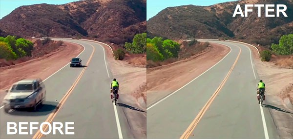

|
Step 1: Intro | Step 2: Brush/Pencil | Step 3: Spot Healing Brush | Step 4: Healing Brush | Step 5:
Patch | Step 6: Content-Aware Move | Step 7: Content Aware Fill | Step 8: Clone
| Step 9: Combining Tools |
| Content Aware Fill |
As mentioned in the previous Step, the Content Aware Fill is not actually a tool on the toolbar, but instead works by using the Fill command. Normally, the Fill command simply fills a selection with color, but when using Content Aware Fill, Photopea looks at the pixels surrounding a selection and fills that selection area with something that matches what is around it. This time, Photopea does not try to blend the pixels together, so this method works great on areas with lines and edges. Working with the Content Aware Fill works slightly different from the other tools that we have used so far, so let's get some practice with it.
Be careful here that you draw your selection area around only the items that you want to remove. If you try to draw a large circle around both people like this...
When you apply the Content Aware Fill you may get something like this...
This is obviously not an ideal result because we will have to take the time to replace the missing line segment. It would be great if we could remove the people and didn't have to worry about fixing a broken line. Luckily for us, if we make a good enough selection, like the one in direction 2 above, Photopea will help us out with the line. Keep going to see how this works.
Photopea was to look at the surrounding pixels and recognize that the people do not belong, but since there is a line running through the rest of the image, Photopea continued the line. As a quick aside here, if it did not work for you and you have something like this...
Don't panic - you didn't do anything wrong. Photopea can be a little picky with how it applies the Content Aware Fill. Simply redoing the Content Aware Fill usually fixes this issue.
Follow the directions below if Photopea did not remove one or both of your people.
Keep in mind when using the Content Aware Fill that Photopea is not blending anything together this time. It is simply looking at the area surrounding your selection and trying to use that area to replace your selection. Also be aware that it is not necessary for the area around the selection to be simple like with the image we are using (we just have gray concrete and a white line). For example, we can use Content Aware Fill on images like the one below...
As long as there are similar elements around what we are removing (in the picture above, notice that there are trees, sky, and water on both sides of the balloon), Photopea can handle filling in the spot. If you look closely, you can see how Photopea replaced the balloon...
The black outline is where the balloon was, and the red arrows are showing that to remove the balloon, Photopea simply made a copy of the tree on the left and placed it in the center over the balloon. This method works great if things are generally the same around the selection, but be careful. If there is a collection of different objects around your selection you will get unexpected results. Consider the image below...
Let's say we want to remove the red car with the tan roof in the middle. If we make a selection with the Lasso Tool...
And then apply the Content Aware Fill, this is what we get...
Notice that not only did we not get a picture of the junkyard with the car missing, but that Photopea simply pulled parts of other cars from around our selection and used them to cover the original car...
The point here is that if what we are removing is surrounded by other objects, then the Content Aware Fill will not work. But if our subject has pretty much the same thing on both sides...

Then we can get good results. It even works on images such as the one below...
Photopea was able to recognize that there were windows on either side of the cat and did a pretty good job of removing him. Yeah, the brick lines are not perfect, but it is much easier to use Content Aware Fill to remove the cat and then correct those lines using one of the tools we've discussed then it is to try and remove the cat through other means.
While Content Aware Fill is an incredibly useful technique, as we have seen it does have some issues. Here are a few things to keep in mind while using Content Aware Fill:
Let's take a minute now to practice using Content Aware Fill.
Let's save our work up to this point.
For our final tool, we will be using the Clone Tool, which is kind of a tool of last resort. Head over to Step 8 to see how it works.
|
Step 1: Intro | Step 2: Brush/Pencil | Step 3: Spot Healing Brush | Step 4: Healing Brush | Step 5: Patch | Step 6: Content-Aware Move | Step 7: Content Aware Fill | Step 8: Clone | Step9: Combining Tools |